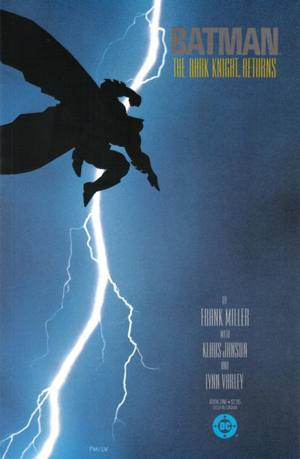

CoverNo image on file
Cover
Batman: The Dark Knight Returns #1
$2,400,000
- Artist
- Frank Miller & Lynn Varley
- Publisher
- DC, 1986
- Sold
- Jun 16, 2022
- Auction house
- Heritage Auctions

Published versionBatman: The Dark Knight (1986 series) #1June 1986View issue on Grand Comics Database →